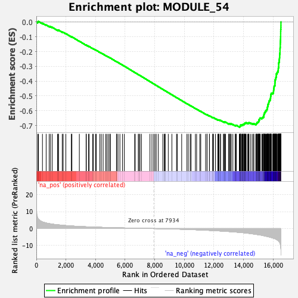

| | | Dataset | DE_genes2 |
| Phenotype | NoPhenotypeAvailable |
| Upregulated in class | na_neg |
| GeneSet | MODULE_54 |
| Enrichment Score (ES) | -0.71035457 |
| Normalized Enrichment Score (NES) | -2.4233172 |
| Nominal p-value | 0.0 |
| FDR q-value | 0.0 |
| FWER p-Value | 0.0 |
Table: GSEA Results Summary

Fig 1: Enrichment plot: MODULE_54
Profile of the Running ES Score & Positions of GeneSet Members on the Rank Ordered List
| PROBE | GENE SYMBOL | GENE_TITLE | RANK IN GENE LIST | RANK METRIC SCORE | RUNNING ES | CORE ENRICHMENT | | 1 | NT5DC2 | | | 95 | 6.145 | 0.0009 | No |
| 2 | SLC7A7 | | | 139 | 5.587 | 0.0043 | No |
| 3 | AIF1L | | | 412 | 3.939 | -0.0081 | No |
| 4 | ADA | | | 662 | 3.283 | -0.0198 | No |
| 5 | TUBA1A | | | 866 | 2.911 | -0.0290 | No |
| 6 | OAS3 | | | 956 | 2.785 | -0.0315 | No |
| 7 | SLC16A3 | | | 1074 | 2.630 | -0.0358 | No |
| 8 | TNFRSF12A | | | 1433 | 2.237 | -0.0553 | No |
| 9 | GPN2 | | | 1485 | 2.190 | -0.0560 | No |
| 10 | RHOJ | | | 1493 | 2.181 | -0.0541 | No |
| 11 | WIZ | | | 1748 | 1.952 | -0.0676 | No |
| 12 | ACTG1 | | | 1813 | 1.906 | -0.0694 | No |
| 13 | IFI30 | | | 1993 | 1.760 | -0.0785 | No |
| 14 | TUBA4A | | | 2362 | 1.516 | -0.0994 | No |
| 15 | LRRC17 | | | 2403 | 1.491 | -0.1002 | No |
| 16 | KIAA0100 | | | 2905 | 1.236 | -0.1296 | No |
| 17 | DDX11 | | | 3360 | 1.054 | -0.1564 | No |
| 18 | MUCL1 | | | 3378 | 1.047 | -0.1563 | No |
| 19 | FSTL3 | | | 3531 | 0.996 | -0.1645 | No |
| 20 | MB | | | 3562 | 0.985 | -0.1653 | No |
| 21 | GGT1 | | | 3804 | 0.893 | -0.1791 | No |
| 22 | HBB | | | 3859 | 0.878 | -0.1815 | No |
| 23 | EFHC2 | | | 4004 | 0.836 | -0.1894 | No |
| 24 | ESM1 | | | 4045 | 0.823 | -0.1909 | No |
| 25 | TM4SF1 | | | 4291 | 0.751 | -0.2052 | No |
| 26 | PXMP4 | | | 4388 | 0.724 | -0.2103 | No |
| 27 | CDH1 | | | 4513 | 0.690 | -0.2171 | No |
| 28 | CDKN1C | | | 4684 | 0.641 | -0.2269 | No |
| 29 | CKB | | | 4765 | 0.621 | -0.2311 | No |
| 30 | RSPH14 | | | 4862 | 0.603 | -0.2363 | No |
| 31 | NRIP3 | | | 4958 | 0.580 | -0.2415 | No |
| 32 | AMPH | | | 5003 | 0.570 | -0.2436 | No |
| 33 | TMEM40 | | | 5413 | 0.467 | -0.2682 | No |
| 34 | MAPK13 | | | 5433 | 0.464 | -0.2689 | No |
| 35 | TENM4 | | | 5520 | 0.446 | -0.2737 | No |
| 36 | APEX2 | | | 5645 | 0.417 | -0.2808 | No |
| 37 | CTNNBIP1 | | | 5823 | 0.380 | -0.2913 | No |
| 38 | PLAT | | | 5946 | 0.356 | -0.2984 | No |
| 39 | SCG5 | | | 6641 | 0.216 | -0.3408 | No |
| 40 | ETV2 | | | 6681 | 0.207 | -0.3429 | No |
| 41 | ITGA2 | | | 6887 | 0.173 | -0.3553 | No |
| 42 | GAD1 | | | 6934 | 0.166 | -0.3580 | No |
| 43 | TPI1 | | | 7004 | 0.155 | -0.3620 | No |
| 44 | APOBEC3B | | | 7101 | 0.134 | -0.3678 | No |
| 45 | PNP | | | 7676 | 0.037 | -0.4030 | No |
| 46 | PLP2 | | | 7811 | 0.016 | -0.4112 | No |
| 47 | FKBP1A | | | 7929 | 0.001 | -0.4184 | No |
| 48 | ATF5 | | | 8014 | -0.014 | -0.4235 | No |
| 49 | TMEM106C | | | 8099 | -0.026 | -0.4287 | No |
| 50 | BEND3 | | | 8234 | -0.047 | -0.4368 | No |
| 51 | SNRPC | | | 8544 | -0.101 | -0.4557 | No |
| 52 | HUWE1 | | | 8641 | -0.118 | -0.4615 | No |
| 53 | HMGCS1 | | | 8693 | -0.128 | -0.4644 | No |
| 54 | MANF | | | 8701 | -0.130 | -0.4647 | No |
| 55 | PFKP | | | 8915 | -0.174 | -0.4776 | No |
| 56 | LAPTM4B | | | 9158 | -0.228 | -0.4922 | No |
| 57 | BYSL | | | 9473 | -0.306 | -0.5112 | No |
| 58 | CMYA5 | | | 9520 | -0.316 | -0.5137 | No |
| 59 | ZC3HC1 | | | 9820 | -0.405 | -0.5316 | No |
| 60 | CDK4 | | | 10174 | -0.517 | -0.5527 | No |
| 61 | FOXD1 | | | 10266 | -0.543 | -0.5577 | No |
| 62 | UNG | | | 10394 | -0.586 | -0.5648 | No |
| 63 | AIMP2 | | | 10453 | -0.604 | -0.5677 | No |
| 64 | SRPK1 | | | 10746 | -0.707 | -0.5849 | No |
| 65 | SQLE | | | 10830 | -0.738 | -0.5892 | No |
| 66 | RHNO1 | | | 11045 | -0.821 | -0.6014 | No |
| 67 | PRDX4 | | | 11110 | -0.845 | -0.6044 | No |
| 68 | PMAIP1 | | | 11436 | -0.983 | -0.6233 | No |
| 69 | CNIH4 | | | 11530 | -1.019 | -0.6279 | No |
| 70 | MID1 | | | 11538 | -1.024 | -0.6272 | No |
| 71 | CCT5 | | | 11693 | -1.083 | -0.6355 | No |
| 72 | SNRPB | | | 11698 | -1.085 | -0.6345 | No |
| 73 | AHCY | | | 11917 | -1.185 | -0.6466 | No |
| 74 | BEST3 | | | 11921 | -1.186 | -0.6455 | No |
| 75 | HOXC10 | | | 11970 | -1.204 | -0.6472 | No |
| 76 | HMGA1 | | | 12102 | -1.273 | -0.6538 | No |
| 77 | CDKN2C | | | 12251 | -1.351 | -0.6614 | No |
| 78 | MT1H | | | 12304 | -1.375 | -0.6631 | No |
| 79 | RCC1 | | | 12313 | -1.379 | -0.6621 | No |
| 80 | RPA3 | | | 12343 | -1.397 | -0.6624 | No |
| 81 | DTYMK | | | 12442 | -1.447 | -0.6668 | No |
| 82 | PHF5A | | | 12443 | -1.448 | -0.6652 | No |
| 83 | ADSL | | | 12635 | -1.554 | -0.6752 | No |
| 84 | E2F8 | | | 12689 | -1.584 | -0.6768 | No |
| 85 | PSPH | | | 12696 | -1.586 | -0.6754 | No |
| 86 | CHAF1B | | | 12733 | -1.605 | -0.6759 | No |
| 87 | PRDX1 | | | 12787 | -1.638 | -0.6773 | No |
| 88 | TRIM24 | | | 13000 | -1.769 | -0.6884 | No |
| 89 | NUDT1 | | | 13014 | -1.779 | -0.6873 | No |
| 90 | RRM1 | | | 13038 | -1.791 | -0.6867 | No |
| 91 | ARL6IP1 | | | 13098 | -1.824 | -0.6883 | No |
| 92 | POLD1 | | | 13115 | -1.833 | -0.6873 | No |
| 93 | CTPS1 | | | 13171 | -1.873 | -0.6887 | No |
| 94 | UBE2S | | | 13279 | -1.941 | -0.6931 | No |
| 95 | ZNF267 | | | 13441 | -2.057 | -0.7007 | No |
| 96 | WDR5 | | | 13445 | -2.060 | -0.6987 | No |
| 97 | SNRPF | | | 13489 | -2.094 | -0.6990 | No |
| 98 | TIMELESS | | | 13518 | -2.107 | -0.6984 | No |
| 99 | RANBP1 | | | 13713 | -2.252 | -0.7079 | Yes |
| 100 | PSMD14 | | | 13753 | -2.288 | -0.7078 | Yes |
| 101 | NME1 | | | 13763 | -2.298 | -0.7058 | Yes |
| 102 | SNRPE | | | 13782 | -2.313 | -0.7044 | Yes |
| 103 | MCM3 | | | 13783 | -2.315 | -0.7019 | Yes |
| 104 | NCAPD2 | | | 13788 | -2.321 | -0.6996 | Yes |
| 105 | SLC25A5 | | | 13792 | -2.324 | -0.6972 | Yes |
| 106 | MCM5 | | | 13861 | -2.378 | -0.6988 | Yes |
| 107 | CKS1B | | | 13865 | -2.382 | -0.6964 | Yes |
| 108 | FEN1 | | | 13911 | -2.426 | -0.6965 | Yes |
| 109 | MCM7 | | | 13952 | -2.457 | -0.6963 | Yes |
| 110 | RFC5 | | | 13956 | -2.460 | -0.6938 | Yes |
| 111 | DHFR | | | 13968 | -2.471 | -0.6918 | Yes |
| 112 | SNRPA1 | | | 14016 | -2.506 | -0.6919 | Yes |
| 113 | ASF1B | | | 14048 | -2.550 | -0.6910 | Yes |
| 114 | NEK2 | | | 14051 | -2.552 | -0.6884 | Yes |
| 115 | RECQL4 | | | 14062 | -2.561 | -0.6862 | Yes |
| 116 | CCNF | | | 14092 | -2.590 | -0.6851 | Yes |
| 117 | CCT6A | | | 14116 | -2.611 | -0.6837 | Yes |
| 118 | TYMS | | | 14161 | -2.652 | -0.6835 | Yes |
| 119 | HSPH1 | | | 14162 | -2.652 | -0.6806 | Yes |
| 120 | KNSTRN | | | 14258 | -2.748 | -0.6834 | Yes |
| 121 | KPNA2 | | | 14317 | -2.796 | -0.6839 | Yes |
| 122 | MTHFD2 | | | 14348 | -2.825 | -0.6827 | Yes |
| 123 | FAM83D | | | 14362 | -2.844 | -0.6804 | Yes |
| 124 | PTTG1 | | | 14464 | -2.952 | -0.6834 | Yes |
| 125 | CHAF1A | | | 14579 | -3.085 | -0.6870 | Yes |
| 126 | IMPAD1 | | | 14666 | -3.208 | -0.6888 | Yes |
| 127 | UBE2T | | | 14697 | -3.240 | -0.6871 | Yes |
| 128 | PLIN2 | | | 14825 | -3.393 | -0.6912 | Yes |
| 129 | TSN | | | 14862 | -3.439 | -0.6896 | Yes |
| 130 | LMNB2 | | | 14879 | -3.473 | -0.6868 | Yes |
| 131 | PCNA | | | 14896 | -3.501 | -0.6840 | Yes |
| 132 | MCM4 | | | 14906 | -3.510 | -0.6807 | Yes |
| 133 | CSE1L | | | 14944 | -3.568 | -0.6790 | Yes |
| 134 | MSH2 | | | 14972 | -3.606 | -0.6768 | Yes |
| 135 | MCM2 | | | 15006 | -3.658 | -0.6748 | Yes |
| 136 | PLK4 | | | 15029 | -3.687 | -0.6721 | Yes |
| 137 | GMNN | | | 15032 | -3.688 | -0.6682 | Yes |
| 138 | E2F1 | | | 15036 | -3.695 | -0.6644 | Yes |
| 139 | TACC3 | | | 15038 | -3.698 | -0.6604 | Yes |
| 140 | CKS2 | | | 15086 | -3.767 | -0.6591 | Yes |
| 141 | SLC7A5 | | | 15093 | -3.780 | -0.6554 | Yes |
| 142 | ZWINT | | | 15107 | -3.798 | -0.6520 | Yes |
| 143 | HPRT1 | | | 15127 | -3.819 | -0.6490 | Yes |
| 144 | CDC25B | | | 15237 | -3.978 | -0.6514 | Yes |
| 145 | ITGB3BP | | | 15248 | -4.001 | -0.6476 | Yes |
| 146 | RAD51 | | | 15283 | -4.088 | -0.6452 | Yes |
| 147 | SPAG5 | | | 15339 | -4.181 | -0.6441 | Yes |
| 148 | BARD1 | | | 15360 | -4.219 | -0.6407 | Yes |
| 149 | GGH | | | 15362 | -4.223 | -0.6361 | Yes |
| 150 | SGTB | | | 15366 | -4.232 | -0.6317 | Yes |
| 151 | DLEU1 | | | 15374 | -4.250 | -0.6275 | Yes |
| 152 | CDCA5 | | | 15393 | -4.273 | -0.6239 | Yes |
| 153 | CDC20 | | | 15404 | -4.309 | -0.6198 | Yes |
| 154 | POLE2 | | | 15406 | -4.310 | -0.6152 | Yes |
| 155 | RAD54L | | | 15435 | -4.365 | -0.6121 | Yes |
| 156 | MTFR2 | | | 15456 | -4.399 | -0.6085 | Yes |
| 157 | PIR | | | 15490 | -4.461 | -0.6057 | Yes |
| 158 | MYBL2 | | | 15492 | -4.462 | -0.6009 | Yes |
| 159 | TRIP13 | | | 15527 | -4.544 | -0.5980 | Yes |
| 160 | GINS1 | | | 15564 | -4.619 | -0.5952 | Yes |
| 161 | ZWILCH | | | 15582 | -4.659 | -0.5911 | Yes |
| 162 | NQO1 | | | 15597 | -4.709 | -0.5868 | Yes |
| 163 | NEMP1 | | | 15605 | -4.735 | -0.5821 | Yes |
| 164 | AURKA | | | 15607 | -4.737 | -0.5770 | Yes |
| 165 | PLK1 | | | 15623 | -4.763 | -0.5727 | Yes |
| 166 | CCNB1 | | | 15643 | -4.796 | -0.5686 | Yes |
| 167 | KIFC1 | | | 15645 | -4.799 | -0.5634 | Yes |
| 168 | CDC25C | | | 15648 | -4.802 | -0.5583 | Yes |
| 169 | KNTC1 | | | 15665 | -4.846 | -0.5540 | Yes |
| 170 | RRM2 | | | 15702 | -4.911 | -0.5509 | Yes |
| 171 | UBE2C | | | 15704 | -4.913 | -0.5456 | Yes |
| 172 | FOXM1 | | | 15710 | -4.931 | -0.5405 | Yes |
| 173 | BLM | | | 15728 | -4.957 | -0.5361 | Yes |
| 174 | BIRC5 | | | 15741 | -4.998 | -0.5314 | Yes |
| 175 | ORC1 | | | 15778 | -5.075 | -0.5280 | Yes |
| 176 | RFC4 | | | 15807 | -5.149 | -0.5241 | Yes |
| 177 | CDK1 | | | 15810 | -5.156 | -0.5186 | Yes |
| 178 | TROAP | | | 15823 | -5.203 | -0.5137 | Yes |
| 179 | MCM6 | | | 15829 | -5.218 | -0.5083 | Yes |
| 180 | CCNB2 | | | 15832 | -5.225 | -0.5027 | Yes |
| 181 | NCAPH | | | 15843 | -5.247 | -0.4976 | Yes |
| 182 | PRIM1 | | | 15856 | -5.276 | -0.4926 | Yes |
| 183 | TPX2 | | | 15859 | -5.288 | -0.4869 | Yes |
| 184 | TOPBP1 | | | 15880 | -5.334 | -0.4823 | Yes |
| 185 | CHEK1 | | | 15965 | -5.552 | -0.4814 | Yes |
| 186 | PSRC1 | | | 16011 | -5.700 | -0.4779 | Yes |
| 187 | RFC3 | | | 16020 | -5.728 | -0.4722 | Yes |
| 188 | LBR | | | 16028 | -5.754 | -0.4663 | Yes |
| 189 | FAM217B | | | 16031 | -5.764 | -0.4601 | Yes |
| 190 | LRP8 | | | 16042 | -5.803 | -0.4544 | Yes |
| 191 | MAD2L1 | | | 16043 | -5.805 | -0.4481 | Yes |
| 192 | KIF2C | | | 16061 | -5.848 | -0.4427 | Yes |
| 193 | ATAD2 | | | 16065 | -5.853 | -0.4365 | Yes |
| 194 | ECT2 | | | 16082 | -5.906 | -0.4311 | Yes |
| 195 | CCNE2 | | | 16115 | -5.986 | -0.4265 | Yes |
| 196 | AURKB | | | 16120 | -6.007 | -0.4202 | Yes |
| 197 | CDC7 | | | 16121 | -6.016 | -0.4136 | Yes |
| 198 | UCHL5 | | | 16127 | -6.042 | -0.4073 | Yes |
| 199 | MELK | | | 16129 | -6.045 | -0.4008 | Yes |
| 200 | AGPAT5 | | | 16135 | -6.061 | -0.3944 | Yes |
| 201 | BUB1 | | | 16142 | -6.084 | -0.3882 | Yes |
| 202 | PRR11 | | | 16177 | -6.259 | -0.3834 | Yes |
| 203 | LMNB1 | | | 16178 | -6.259 | -0.3766 | Yes |
| 204 | GPSM2 | | | 16202 | -6.325 | -0.3711 | Yes |
| 205 | HJURP | | | 16210 | -6.380 | -0.3645 | Yes |
| 206 | ODC1 | | | 16212 | -6.391 | -0.3576 | Yes |
| 207 | GINS2 | | | 16213 | -6.392 | -0.3506 | Yes |
| 208 | PKMYT1 | | | 16257 | -6.586 | -0.3461 | Yes |
| 209 | CDC45 | | | 16272 | -6.693 | -0.3396 | Yes |
| 210 | IMPA2 | | | 16318 | -6.974 | -0.3348 | Yes |
| 211 | BUB1B | | | 16335 | -7.102 | -0.3280 | Yes |
| 212 | KIF23 | | | 16347 | -7.203 | -0.3208 | Yes |
| 213 | ANLN | | | 16350 | -7.214 | -0.3130 | Yes |
| 214 | ELOVL6 | | | 16362 | -7.300 | -0.3058 | Yes |
| 215 | NUSAP1 | | | 16374 | -7.420 | -0.2983 | Yes |
| 216 | CDC6 | | | 16375 | -7.439 | -0.2902 | Yes |
| 217 | CCNA2 | | | 16376 | -7.439 | -0.2821 | Yes |
| 218 | NUF2 | | | 16382 | -7.475 | -0.2742 | Yes |
| 219 | ANP32E | | | 16405 | -7.799 | -0.2670 | Yes |
| 220 | KIF11 | | | 16409 | -7.860 | -0.2586 | Yes |
| 221 | SMC4 | | | 16421 | -7.981 | -0.2506 | Yes |
| 222 | NEIL3 | | | 16430 | -8.045 | -0.2423 | Yes |
| 223 | CENPA | | | 16438 | -8.139 | -0.2338 | Yes |
| 224 | SHCBP1 | | | 16441 | -8.157 | -0.2251 | Yes |
| 225 | TTK | | | 16444 | -8.189 | -0.2162 | Yes |
| 226 | PBK | | | 16458 | -8.487 | -0.2078 | Yes |
| 227 | CDKN3 | | | 16463 | -8.532 | -0.1987 | Yes |
| 228 | SMC2 | | | 16464 | -8.568 | -0.1893 | Yes |
| 229 | ARHGAP11A | | | 16467 | -8.620 | -0.1800 | Yes |
| 230 | DEPDC1B | | | 16474 | -8.791 | -0.1708 | Yes |
| 231 | DLGAP5 | | | 16482 | -9.145 | -0.1612 | Yes |
| 232 | MKI67 | | | 16483 | -9.193 | -0.1512 | Yes |
| 233 | CKAP2 | | | 16486 | -9.390 | -0.1411 | Yes |
| 234 | POLQ | | | 16490 | -9.648 | -0.1307 | Yes |
| 235 | TOP2A | | | 16497 | -9.873 | -0.1203 | Yes |
| 236 | CENPE | | | 16501 | -10.010 | -0.1095 | Yes |
| 237 | KIF14 | | | 16503 | -10.060 | -0.0986 | Yes |
| 238 | CENPF | | | 16507 | -10.688 | -0.0871 | Yes |
| 239 | CEP55 | | | 16508 | -10.710 | -0.0754 | Yes |
| 240 | ASPM | | | 16510 | -10.824 | -0.0637 | Yes |
| 241 | CDCA7 | | | 16514 | -11.289 | -0.0515 | Yes |
| 242 | DEPDC1 | | | 16522 | -11.603 | -0.0393 | Yes |
| 243 | HMGB2 | | | 16525 | -11.801 | -0.0265 | Yes |
| 244 | NDC80 | | | 16527 | -12.233 | -0.0132 | Yes |
| 245 | HMMR | | | 16528 | -12.240 | 0.0002 | Yes |
Table: GSEA details [plain text format]
Fig 2: MODULE_54: Random ES distribution
Gene set null distribution of ES for MODULE_54